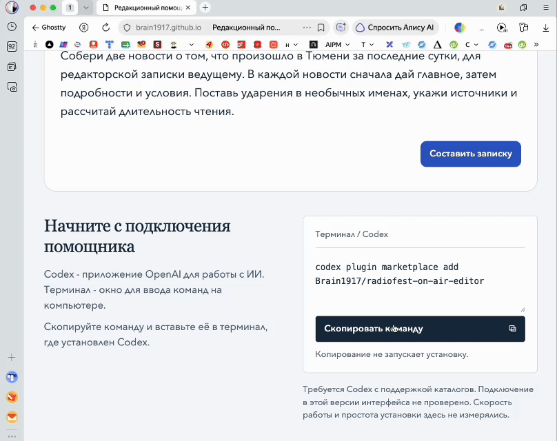

Редакционный помощник радио
Внедрите ИИ без сложной настройки и выпускайте материалы быстрее, сохраняя точность и доверие слушателей
Готовые инструкции для ИИ под задачи редакции. Подключите помощника один раз, затем передавайте материалы и описывайте задачу обычными словами.
Что помощник подготовит
для вашей радиостанции
Выберите задачу, чтобы увидеть результат и порядок работы.
Подготовить новость или подводку для чтения в эфире
Из сообщений, документов и ссылок - текст для ведущего с главной мыслью, подтверждёнными ударениями и расчётной длительностью. Если задано время, помощник предложит сокращение с сохранением существенных фактов и условий.
Как подготовим материал
Разбираем материалы
Читаем сообщения, документы и ссылки. Определяем, что произошло и что нужно сообщить слушателю.
Сверяем факты
Проверяем имена, даты, числа и цитаты по источникам. Отдельно отмечаем противоречия и неподтверждённые сведения.
Пишем текст для ведущего
Ставим главное в начало, разбиваем длинные предложения. Добавляем подтверждённые ударения и необходимые паузы.
Проверяем длительность и содержание
Рассчитываем время чтения. При превышении заданного лимита сокращаем второстепенное, сохраняя существенные факты и условия.
Составить вопросы к интервью с учётом гостя и темы разговора
По сведениям о госте, теме выпуска и тому, что нужно узнать слушателям, - последовательность основных вопросов и уточнений. Не универсальная анкета, а план конкретного разговора.
Как подготовим материал
Определяем задачу интервью
Учитываем тему выпуска, сведения о госте и то, что должны узнать слушатели.
Изучаем контекст
Читаем предоставленные публикации и сведения об опыте гостя. Сверяем факты, которые собираемся использовать в вопросах.
Составляем вопросы
Выстраиваем разговор от знакомства с темой к подробностям. Добавляем уточнения, чтобы получить примеры и объяснения.
Собираем план для ведущего
Убираем повторы, отмечаем вопросы без достаточных оснований. Распределяем темы по времени, если длительность интервью задана.
Написать рекламное объявление для чтения в радиоэфире
По предложению рекламодателя - текст с товаром или услугой, условиями предложения и способом откликнуться. С расчётом времени на основную часть и обязательные формулировки.
Как подготовим материал
Разбираем предложение рекламодателя
Определяем товар или услугу, адресата рекламы и действие, которого ждём от слушателя.
Сверяем обещания и условия
Проверяем цену, скидку, сроки и ограничения по материалам рекламодателя. Выделяем обязательные формулировки.
Пишем объявление
Объясняем предложение и способ откликнуться. Сохраняем условия, контакты и обязательный текст.
Проверяем чтение и время
Уточняем произношение названий, телефона или промокода. Рассчитываем длительность, не сокращая обязательные условия ради лимита.
Написать анонс программы или события для соцсетей радиостанции
По описанию программы или события - пост для подписчиков: что состоится, когда, как послушать или принять участие. С сохранением переданных ссылок и условий.
Как подготовим материал
Разбираем исходные сведения
Определяем, что анонсируем, для кого и что подписчик должен сделать после прочтения.
Отбираем подробности
Собираем тему, участников, дату, время, способ прослушивания или участия. Проверяем ссылки и условия.
Пишем пост
Начинаем с программы или события. Объясняем, что ждёт подписчика и как послушать выпуск или принять участие.
Сверяем с исходником
Проверяем даты, имена, ссылки и сохранность условий. Если задан лимит длины, считаем объём и сокращаем второстепенное.
Подготовить новость или статью для сайта радиостанции
По материалам редакции или найденным интернет-источникам - текст с заголовком, основной информацией и подробностями. Источники и неподтверждённые сведения показываем отдельно. Самостоятельный поиск требует доступа к интернету.
Как подготовим материал
Определяем задачу материала
Устанавливаем тему, вопросы читателя и границы: о каком событии, месте и периоде пишем.
Собираем фактуру
Читаем материалы редакции. Если нужен интернет-поиск и он доступен, находим и читаем источники, сопоставляем сведения.
Пишем материал
Создаём заголовок и вводный абзац. Раскрываем подробности в порядке вопросов читателя, добавляем нужные подзаголовки.
Проверяем утверждения
Сверяем заголовок и основной текст с источниками. Отдельно приводим основания и указываем, что подтвердить не удалось.
Сократить и упростить черновик новости, анонса или объявления
По вашему тексту - новая редакция без смысловых повторов, канцелярита и перегруженных предложений. С сохранением фактов, авторской позиции и обязательных условий.
Как подготовим материал
Читаем черновик целиком
Определяем адресата и задачу текста. Выделяем факты, авторскую позицию и условия, которые нельзя потерять.
Исправляем структуру
Ставим главную мысль на нужное место, собираем связанные сведения рядом. Убираем смысловые повторы.
Упрощаем формулировки
Разбиваем перегруженные предложения, заменяем канцелярит конкретными словами. Сохраняем уместную интонацию автора.
Сравниваем с оригиналом
Проверяем, что сохранились факты, цитаты, условия и смысл. Возвращаем отредактированный текст целиком.
Что сохраняем и проверяем
Демонстрация редакторской записки
/on-air-text-editor · Редакционный помощник радио
Ответ помощника
В Тюмени открыли бесплатную регистрациюГлавное поставили в начало на концерт музыки Кши́штофа Пендере́цкого.Поставили ударения Он пройдет шестого сентября в семь вечера в зале "Северный". Записаться нужно до шести вечера пятого сентября.Сохранили срок регистрации
Библиотека "Городская" продлила запись на встречу с краеведами до шестого сентября. Встреча состоится восьмого сентября в шесть вечера. Участники смогут задать вопросы об истории тюменских улиц.
Расчетная длительность: 25 секунд · 53 слова · 130 слов/мин
Сообщение организаторов о концерте · 4 сентября, 18:00 ↗
Сообщение библиотеки о встрече · 5 сентября, 09:30 ↗
Википедия: «Пендерецкий, Кшиштоф» · ударение ↗
Учебное сообщение организаторов · 4 сентября 2026 года, 18:00. Время тюменское.
Шестого сентября в 19:00 в зале "Северный" в Тюмени прозвучат произведения польского композитора Кшиштофа Пендерецкого. Предварительная запись обязательна. Приём заявок закончится пятого сентября в 18:00. Регистрация бесплатная, она открылась сегодня, четвёртого сентября.
Учебное сообщение библиотеки · 5 сентября 2026 года, 09:30. Время тюменское.
Восьмого сентября в 18:00 библиотека "Городская" в Тюмени проведёт встречу с краеведами. Участники смогут задать вопросы об истории тюменских улиц. Ранее приём заявок должен был закончиться четвёртого сентября. Библиотека продлила запись до шестого сентября.
Начните с подключения помощника
Codex - приложение OpenAI для работы с ИИ. Терминал - окно для ввода команд на компьютере.
Скопируйте команду и вставьте её в терминал, где установлен Codex.
Копирование не запускает установку.
Требуется Codex с поддержкой каталогов. Подключение в этой версии интерфейса не проверено. Скорость работы и простота установки здесь не измерялись.
Как установить скилл

Нажмите на запись, чтобы открыть её в полном размере. Чтобы скрыть анимацию, нажмите на заголовок.